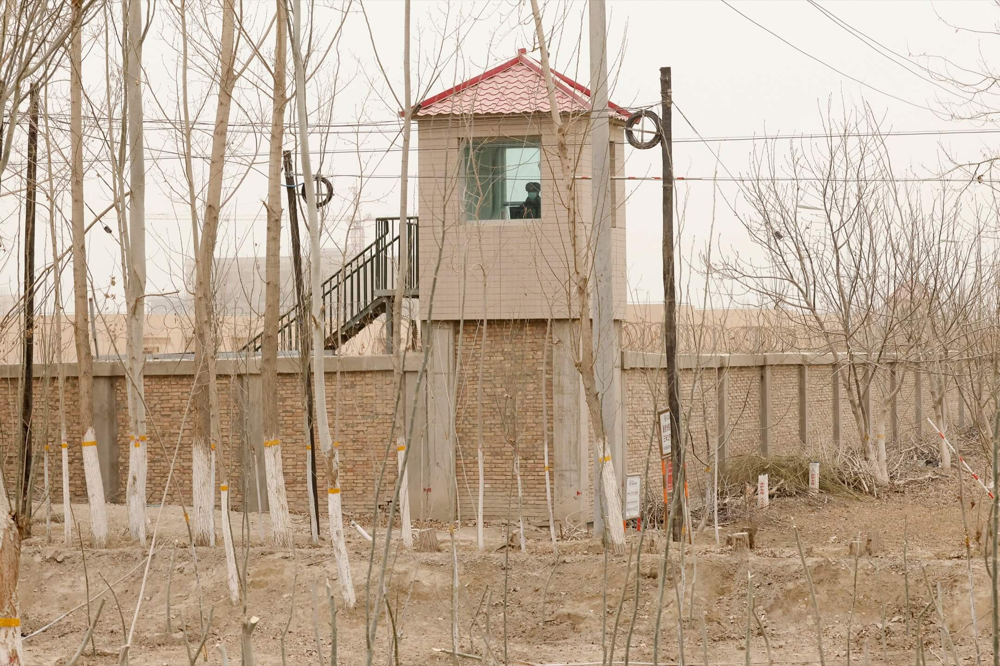

當漢人解封，是否還會記得集中營的維吾爾人？一名漢族女性的自白｜端傳媒 Initium Media
Table of Contents
那一刻我感覺自己是一個身處白人集會高喊 Black Lives Matter 的白人，是一個身處男性集會高呼女權的男人。
Figure 1: 2022年11月29日，洛杉磯，南加州大學校園裡一名婦女為烏魯木齊大火的受害者點燃蠟燭。攝：Wally Skalij/Los Angeles Times via Getty Images
November
刊登於 2022-12-04
「女人沒有國家？」是 端傳媒新開設的專欄，名字源於伍爾芙的一句話「As a woman I have no country」，但我們保留了一個問號，希望能從問號出發，與你探討女性和國家的關係，聆聽離散中的女性故事和女性經驗。我是這個欄目的編輯符雨欣。這 是「女人沒有國家？」的第一篇，來自一名漢族女性，從最近的中國抗議聲援活動中，反思漢族、女性在抗爭中的位置。
封控抗議潮期間，我在國外參加了一個悼念烏魯木齊大火死難者的燭光晚會，結束後整個人卻陷入在深深的愧疚和憤怒情緒中，因為在那個晚上，我無比深切 感受到，作為一名漢人，我是一名中國白人。我當然明白在中國能有這樣的抗議行為是非常不容易的、應該讚許和珍惜的，但我更認為，這場由烏魯木齊大火點燃 的、從上海街頭蔓延到世界的抗議活動，在沒有喊出 Free Uyghur 的口號前，即便喊一百遍習近平和共產黨下台，也是不激進的，是沒有團結可言的。
符號化的悼念會
我去的這場悼念會和我在網上看到的許多海外悼念會非常相似。都是以悼念烏魯木齊大火遇難者為由表達對中國國內抗議運動的支持。來的人不少，大家帶了 蠟燭鮮花和白紙。在活動上，大家義憤填膺喊了四通橋口號，喊了獨裁者下台的口號。然而在蠟燭、白紙、鮮花的包裹中，更多的是反封控反極權和要自由的標語， 只有零星一兩張遇難者的照片。
在喊着逝者安息的人群裏，我不知道多少人知道自己悼念的是誰，有多少人知道遇難者都是維吾爾人，有多少人知道那廣為流傳的去世的一家五口（編註：有一位維吾爾母親和她的四個孩子在大火中離世），家庭裏的父親和大兒子早在2017年就進了集中營。
當然，這種對遇難者身份的不了解首先是因為中國政府數字化受害者、不公布身份所致。在中國，去搜集亡者信息都被認為是一種犯罪。但是作為來悼念的 人，是不是能在力所能及的情況下，在網上搜集一些現有的信息進行認真悼念呢？而不是以悼念為名，只表達抗議口號。遇難的維吾爾逝者在這場悼念會里，在這場 反極權的爭取自由的抗議活動裏，也變成了符號。
很難形容我那一刻的羞恥和站立難安。
Figure 2: 2022年12月2日，超過四百人參加了在波士頓唐人街舉行的燭光守夜活動，以抗議中國的清零政策，並紀念烏魯木齊火災中的遇難者。
我沒有什麼立場去指責別的抗議者和組織者，因為我也是符號化維吾爾逝者的一員。在為烏魯木齊火災慘案憤怒的那些天裏，在為國內群起的反抗活動振奮的 那些天裏，我從來沒有一刻去主動了解，遇難的到底是誰。來之前，我只想着帶白紙，都沒想着把逝者照片打印帶過來。也是在追悼會前不久，我才想到我不知道悼 念的人是誰，上網查找才知道所有遇難的人都是維吾爾人。是在 Abduweli Ayup 這位維吾爾博主那裏，我才第一次知道那一家五口的男主人和大兒子的遭遇。
烏魯木齊的遇難者並不僅僅和貴州大巴的遇難者一樣是封控政策的受害者，烏魯木齊的維吾爾遇難者更是種族清洗政策的受害者。
也是在那時，我才意識到我對於許多活動海報和口號喊「同胞」的不適。漢人有什麼臉去做維吾爾人的同胞？這麼多年來，大多數漢人對同胞種族清洗的慘痛遭遇不聞不問，這時候為了自己的自由，開始喊「同胞」了。就像另一位維吾爾博主Nyrola質問的那樣，「解封後漢人可以 move on，但過去五年集中營和冤獄裏的維吾爾人呢？誰給他們解封？」是啊，當國內的防疫政策有所鬆動，當漢人走出封控的圍欄時，是否還會記得在集中營裏的維吾爾「同胞」？
我在路上就下了決心，要在追悼會上喊出「關閉集中營」的口號。我意識到一場以悼念維吾爾人為名的活動，如果不為維吾爾人發聲是沒有人性的。在潮水般淹沒我的羞愧裏，我鼓起勇氣盡力喊了好幾次。人群也跟着喊了。我也分享了我知道的那一家五口的故事，有人表達了憤慨。
我喊了「關閉集中營」，但是這並沒有使我更好受一些。在那個夜晚，我除了知道那一家五口，我也不知道其他受害人的信息，不知道TA們的名字。我仍然 不知道我悼念的人們到底是誰。極權政府的控制建立在去人性化的基礎上，但是現在抗議極權的活動也把逝者當作抗議的口號和符號。也正是因為看不到具體的人， 看不到維吾爾人，這樣的反極權抗議活動，實際上甚至鼓勵助長了漢族中心主義和對維吾爾人的壓迫。
我喊了關閉集中營，但是這並沒有使我好受一些。不去發聲、不去喊這些口號是不對的。但在沒有維吾爾人聲音的那場活動裏，我作為漢人喊「關閉集中 營」，也沒有感覺很對。我有一種難以言喻的僞善感。那一刻我感覺自己是一個身處白人集會高喊 Black Lives Matter 的白人，是一個身處男性集會高呼女權的男人。
在那一刻，我終於直面了一個我一直迴避的事實：作為一名漢人女性，作為一直被打壓的一名女權主義者，我一直不認為自己在中國是有特權的，我認為自己 是一名被壓迫者。但是無可否認，作為一名漢人，作為過去知道維吾爾慘劇而沒有更多關心和更多發聲的漢人，我是特權者，我是一名迫害者。
Figure 3: 2022年11月29日，紐約，中國駐美國領事館附近，人們參加反中國政府的示威，並悼念烏魯木齊火災死難者。
團結的暴力
前幾天我在網上看到廣為轉發的不分化宣言，也聽到很多人說要認可不同的政治訴求，大概是求同存異的意思。我對這樣的說法很不認同。我認為，不是說大家都反對極權統治，就能不分化、就能建立團結。
尤其不能把漢人和維吾爾人的訴求僅僅看成是不同的政治訴求。這樣的說法塑造了漢人和維吾爾人平等的假象，遮蔽了漢人和維吾爾人之間的權力壓迫關係。
前幾天我看到 Chenchen Zhang 博主分享她朋友的評論， 說得很對。「China is a Han supremacist state. Han people‘s solidarity with Xinjiang has to be built based on this realization」。只有承認這種漢族中心主義的壓迫、只有承認這種分化，才有真正的團結可言。和稀泥的團結，以及現在很多人說的團結，是漢人拿自 己的訴求和利益強行創造的團結，嚴厲一點說，這甚至是以團結為名的暴力。
這場運動以來，我自己在海外也遭遇了很多漢族中心主義（男性為主）。許多抗議者勇於喊出習近平下台、共產黨下台的口號，卻十分牴觸東突旗。很多人甚 至公開發表帝國主義式的（imperialist）反分裂宣言。這種情況不是孤例。我有朋友甚至參加了一個活動，整個晚上都在和反分裂漢男吵架。
在這樣的情況下，不能和稀泥式地說大家僅僅是不同的政治訴求。必須要承認，很多漢人的政治訴求是壓迫性的政治訴求。在這裏，我不僅僅是在指公開反分 裂的漢族至上主義者。我認為這場運動更大的問題是，承認維吾爾人受到的壓迫，卻有意無意地在運動中忽視這一點。這樣的行為是一種更隱蔽的但是更危險的暴 力。
很多人是知道新疆的情況，並支持維吾爾人的訴求的。但是問題是，在無意識裏，很多漢人覺得關閉集中營僅僅應該是維吾爾人的訴求。在我連續喊了幾次關閉集中營後，有人問我是不是新疆人。
這是善意的詢問，但是問題的背後隱藏了這樣一個潛意識：只有新疆人才會關心新疆的事情。
Figure 4: 2020年6月18日中國新疆維吾爾自治區，工人戴着口罩在一家服裝廠工作。
我也聽過這樣一種支持觀點：為維吾爾人發聲是很重要的，因為維吾爾人的現在就是漢人的未來，為維吾爾人發聲也是為自己發聲。這樣的觀點在政治動員策 略（strategy）的層面是有可取性的，但是這種觀點問題也很大。因為它的潛台詞是說：漢人為漢人的自由發聲，維吾爾人為維吾爾人的自由發聲，只有在 維吾爾人的命運關係到漢人的命運時才為維吾爾人發聲。大部分人的重點還是在罵獨裁、罵封控上，維吾爾人的問題實際上是被邊緣化的。
在這裏，我要強調，對漢人而言，維吾爾人的自由和人權，不應該是這場運動的次要訴求，而是這場運動的主要訴求。美國70年代有個黑人女權組織 Combahee River Collective 就曾發表： 「If Black women were free, it would mean that everyone else would have to be free since our freedom would necessitate the destruction of all the systems of oppression.」 -–—在帝國主義所創造的壓迫金字塔的最底端，是黑人女性，只有黑人女性自由了所有的人才會自由。只有在這樣的情況下，壓迫的系統才被徹底摧毀。
反過來說，在黑人女性上層的其他人的自由，都無法帶來黑人女性的自由，更有甚者，比如白人女性的自由很可能仍是建立在對黑人女性的壓迫基礎上的。
同理，今天在中國，必須要承認，中國這個政權、這個國家、這個所謂的中華民族的概念都是建立在對包括維吾爾人在內的少數族群的壓迫基礎上的。如果漢 人抗議者今天認為人人都應該享有平等和自由，那麼就應該喊出Free Uyghur的口號。如果僅僅止步於反封控或者僅僅止步於爭取漢人自己的自由，那這樣的自由，仍然是對少數族群的壓迫。在這樣的情況下，我認為沒有所謂的 不同意見，無法求同存異，因為這些訴求並不是平等的「不同」，而是壓迫與被壓迫的關係。
中國共產黨自己在最開始搞革命的時候，也是奔着「大解放」去的，但是面對所謂不同的訴求，提出階級解放是最主要的，其他訴求比如婦女解放會隨着階級 解放的實現而實現。但是歷史和現實都告訴我們並非如此。如果在反極權的抗議活動裏，仍然是多數優先甚至是多數對少數的暴力，那麼這場運動，如果勝利，也很 可能是一個新的壓迫政權取代另一個壓迫政權。
從來沒有「中國人」和「我們」。運動不是和中國人站在一起，而應該是和維吾爾人站在一起，和新疆的所有少數群體站在一起，和最被壓迫的人站在一起。
Figure 5: 2022年11月28日，為悼念烏魯木齊大火的死難者，中國駐英國倫敦大使館對面放滿鮮花和蠟燭。
看見具體的人
喊出「共產黨下台，習近平下台」的憤怒是樸素的、可貴的、和勇敢的；但是這種憤怒需要更進一步。如果只看得到共產黨和習近平，那這種憤怒是廉價的。 不少人的集會分享都表達過感動的情緒。我也感動國內上街人們的勇氣，我也感動海外支持的人群，但是我在這樣的感動裏看不到未來。
作為一個女權主義者，這樣的體感並非第一次，我腦子裏浮現出唐山打人事件、徐州鐵鏈女事件中的群情激憤。這樣的激憤是可貴的，但是之後呢？為唐山事 件和徐州事件發聲的人裏有很多男性，這些男性意識到這種讓他們氣憤的性別暴力和生活中非常普遍的性騷擾是同根同源嗎？他們意識到自己是父權社會的既得利益 者甚至迫害者嗎？不去追問背後的社會和文化結構問題，而把目標對準施暴個體的憤怒能走多遠呢？
想想20世紀初全世界那些振奮人心的反殖民的民族主義鬥爭。到現在，這個世界變好了嗎？世界人民自由了嗎？民族主義是帝國主義的幽靈 （Nationalism is the ghost of imperialism）. 對於女權主義者來說，把習近平和共產黨當作是敵人可以是一種短期戰略戰術，但是把習近平和共產黨當作終極敵人是短視的和錯誤的。我們有應該有更深遠的目標 （We have bigger fish to fry）.
因此我認為，在這些以及未來的可能的抗議中，不要再把目光僅僅放在中國或者國家，不要問這個國家未來如何，不要把自己的訴求建立在目前的民族國家基 礎上。要看到人，要看到具體的人。要問怎麼樣的運動和革命才能讓人自由，才能讓人平等。看到具體的人是戰勝去人性化政權和文化的武器。看到具體的人也應該 是運動的最終目的。看到具體的人，看到不同的人才是真正團結的基礎。
作為一名漢人女權主義者，我很清楚這個政權的殘酷手段。即便是漢人在國外，參加任何這樣的悼念集會都會有風險。這篇文章不是要否認普通漢人所受的壓 迫和痛苦，也不是要否認普通人在海內外（尤其國內）上街的義勇，更不是讓所有人都去衝塔（編註：送頭）。已經聽說太多國內抗議者被捕後所受的虐待和毆打， 還有很多人杳無音訊不知所蹤，這些都需要尚且自由的人持續運動去為TA們討個公道。只是在運動如火如荼進行的當下和之後，我都認為要對運動有所反思，要看 到運動本身所存在的權力問題。
請已經勇敢地在喊「習共下台」的海外抗議者們，和為抗議者提供文宣口號的賬號們，把「關閉新疆集中營」加入你們的訴求裏。對於其他人，如果無法站出 來，請一起開始看到具體的人。從了解烏魯木齊維吾爾遇難者開始，了解TA們的名字和故事。由於強大宣傳機器的存在，國內很多漢人不知道甚至不承認新疆集中 營的存在。如果更多的人一起看到具體的人，或許可以幫助打開這個信息的黑洞。
如果無法公開為維吾爾人發聲，請至少關注新疆，關注維吾爾人。關於維吾爾人的遭遇和故事，已經有很多媒體報道，這些都很容易搜到。還有 Xinjiang Victims Database 和 Xinjiang Documentation Project 兩個網站，能看到個體的故事。抗議活動如果以悼念為由進行，請認真悼念，並請願意發聲的維吾爾人和其他少數群體多發聲。這一點29日紐約的集會就做得很好。
口號、符號、政治訴求，都不如個體的經驗和故事重要。請多多聆聽維吾爾人的故事和聲音；多多關注其他少數群體，聆聽TA們的聲音。

Figure 6: 2022年5月23日，新疆莎車縣一個拘留中心，一名保安人員在守望台看守。
「我看見了，我看著呢」
從悼念會回來之後，我就嘗試尋找目前知道的一些遇難者的名字。
Abduweli Ayup這位博主的推文和CNN對逝者家屬的報道提供了一些遇難者信息：
一家五口-–—住在19樓
1）媽媽：Kamarnisahan Abdulrahman （根據CNN）；
HAIERNISHAHAN ABUDUREHEMAN（根據Abduweli Ayup推文）
2） Shehide, 13歲
3） Imran， 11歲
4） Abdurrahman ,9歲
5） Nehdiye, 5歲
父親和大兒子目前在新疆集中營。根據CNN，父親名字是 Ali Matniyaz，兒子名字是 Yiliyas Abudulrahman；根據 Abduweli Ayup 推文，父親名字是 Eli Metniyaz，兒子名字是 Ilyas Eli。
目前這家人中還有女兒 Sharapat Mohamad Ali 和兒子 Mohamad 在土耳其，他們正在通過海外媒體發聲，請大家去聽他們的聲音。
Elzat Eziz，14歲；和他21歲的姐姐，姓名未知
Gulbahar 和她的兩個孩子
關於遇難者人數，官方說10個，但是目前我看到的最多有說40多個的。在中國的暴力機器下，作為個體，可能能做的有限-–—火災第二天，來自水磨溝區 24歲的「蘇某」就因質疑死亡人數被行政拘留。但是至少可以持續關注。持續關注這些亡者可能的信息，持續關注被拘留的「蘇某」，持續關注亡者家屬的聲音， 持續關注火災中活下來的維吾爾人。
前幾天我在網上看到的另一篇呼籲漢人關注新疆問題的文章（因為看到的文章沒有鏈接只有文字轉發，所以不知道出處，無法準確引用，十分抱歉），結尾引用了維吾爾博主 Humar Issac 的《面對新疆危機，一個2020年的普通人可以做些什麼》文章中的一段話。我深受觸動，也希望在這裏分享給大家：
「你不需要寫一段情真意切的告白，不需要寫得從極左到極右都挑不出毛病。我們所求不過就是『被看見』而已，因為我們被看不見太久了，也因為『被看 見』是能夠真實地改善至少個別受害者的處境的。所以你只需要說，我看見了，我看着呢，這就已經 good enough. 我們會在沒有黑暗的地方相見嗎？我不知道，說實話我也並不真的在乎。我只關心今天、當下，我們遙遙望見彼此的螢火，彼此看見。」
我看見了，我看着呢。
本刊載內容版權為端傳媒或相關單位所有，未經端傳媒編輯部授權，請勿轉載或複製，否則即為侵權。